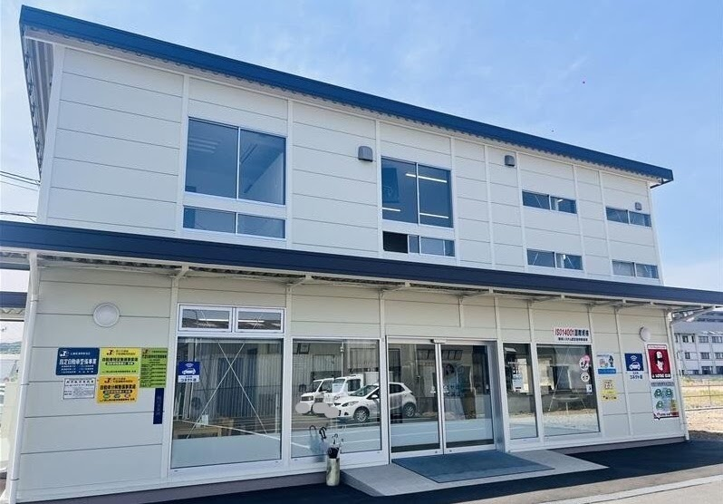

経営理念
- 常に豊かさを追求し、優れた人材育成へ努力・研鑽しよう。
- お客様満足度を第一とし、質の良い物・サービスを提供しよう。
- 価値ある仕事を通じ、公平な配分と利益をもって地域社会に貢献しよう。
| 商号 | タカヤモーター株式会社 タカヤリース株式会社 |
|---|---|
| 創立 | タカヤモーター：昭和40年5月10日 タカヤリース：昭和59年5月（事業部発足 昭和50年10月） |
| 代表者 | タカヤモーター 代表取締役社長 草地 賢吾 タカヤリース 代表取締役社長 石指 英樹 |
| 所在地 | 〒703-8233 岡山市中区高屋21-1 |
| 資本金 | 1,000万円 |
| 従業員数 | 27名 |
| 事業内容 | タカヤモーター：自動車販売業務／自動車整備業務／自動車損害保険代理店業務 タカヤリース：自動車リース業務／レンタカー業務／（株）ロートピア フランチャイズ業務 |
| 取扱メーカー | スズキ・ダイハツ代理店。新車は日本車全メーカー（トヨタ／ホンダ／日産／ダイハツ／スズキ／マツダ／三菱／スバル／いすゞ／三菱ふそう／日野） |
| 認証・許可 | 指定自動車整備事業／自動車特定整備事業 ISO 14001 認証取得 番号は要確認 |
| 加盟団体 | ロータスクラブ（全日本ロータス同友会） 会員 |
| 採用 | 採用情報を見る → |
| 営業時間 | 8:30–17:30（定休日：毎週火曜日／年末年始・ゴールデンウィーク・お盆） |
OUR PROMISE
大切にしていること
きめ細かいサービスが、タカヤの売りです。
- お客様にとって、何がベストかを優先して対応します
- おクルマの代替ありきの提案はしません
- 大切なおクルマをながく乗りたい方には、どんな点検や修理が必要かを丁寧に説明します